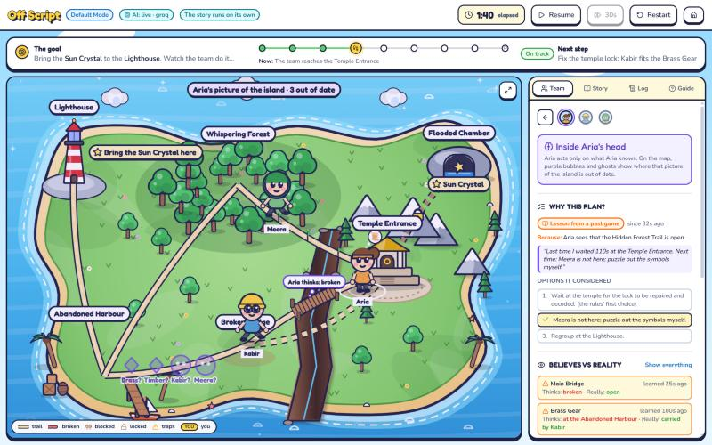
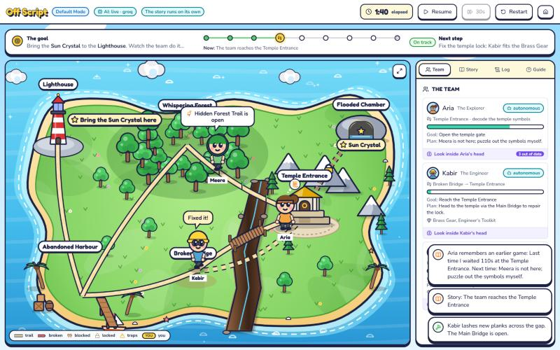
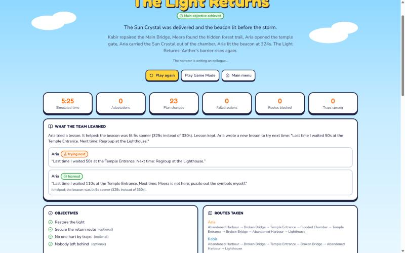
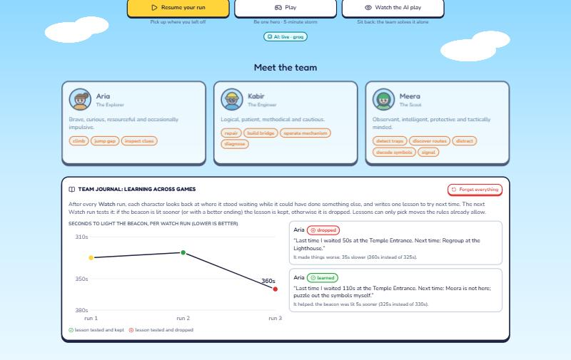

| Feature 1 | Mind View: see inside an AI character's head |
| Feature 2 | Team Journal: characters that learn across games |
| Team | Devansh Patel · Devesh Singh · Anurag Patel · Siddhank Kashyap · Himanshu Srivastava · Aniket Mondal |
| Date | 18 November 2026 |
| Feature 1: Mind View | Feature 2: Team Journal | |
|---|---|---|
| What it does | Shows each character's decision (options, who chose, why), what it believes compared with reality, and its memories. Purple bubbles and "ghosts" on the map show where its knowledge is out of date. | After each Watch run, a character notices where it waited a long time and writes a lesson. The next run tests the lesson. It is kept only if the team finishes better; otherwise it is dropped. |
| Why it is unique | Most games hide AI decisions. We show that our characters act on their own partial knowledge, not on the true game state. | Most game characters forget everything when the game restarts. Ours remember, improve, and also reject bad ideas. |
| Research link | ReAct (visible reasoning), LLM-Modulo (options → choice → check). | Generative Agents (reflection), Reflexion (learning from mistakes in words). |
| Safety | Only compares facts the player can already see, so nothing secret is revealed. | A lesson can only choose an option the rules already allow, so learning never breaks a game rule. |
| Watch run | Beacon lit at | What the Team Journal did |
|---|---|---|
| Run 1 | 330 s | Aria waited 110 s at the temple. She writes a lesson: "Next time: puzzle out the symbols myself." |
| Run 2 | 325 s | Lesson tested: 5 s faster, so it is kept. She writes a new lesson: "Regroup at the Lighthouse instead of waiting." |
| Run 3 | 360 s | New lesson tested: 35 s slower, so it is dropped. |
| Run 4+ | 325 s | The team keeps what worked. No long waits left to learn from. |
The improvement is small (5 s) because the starting plan was already well tuned. The important part is the method: the team tries an idea, measures it, keeps what helps and rejects what hurts.
| Suite | Before | Now | New tests |
|---|---|---|---|
| Backend (pytest) | 201 | 217 pass | 8 Mind View + 8 learning |
| Frontend (vitest) | 30 | 35 pass | 5 (Mind panel, team button, lesson labels) |
| Live check in the browser | Watch run 1 → lesson written → Watch run 2 uses it (pop-up "Aria remembers an earlier game") → kept. Game Mode uses kept lessons only. No console or server errors. | ||
The idea: in our game every character acts only on what it knows, not on the real state of the island. Until now this was invisible. The Mind View makes it visible. Open the Team tab and click "Look inside Aria's head".

While building this we also found and fixed a small existing bug: after Kabir used the timber, he still believed he was carrying it. Characters now update their belief about items that leave their hands.
The idea: after every Watch run, each character looks back: "Where did I stand waiting for a long time, when my rules offered something else I could do?" That becomes a lesson written in words. The next Watch run tests it.



Each member took the part of the two features that matches their role in the project. Feature 1: Mind View Feature 2: Team Journal
| Member (role) | Feature 1: Mind View | Feature 2: Team Journal |
|---|---|---|
| Devansh Patel Backend & API | Added each character's mind to the game state API | Journal API (/api/journal, reset); hooked the journal into the server so every finished run is recorded once |
| Devesh Singh Database & simulation | Saving the decision trace and waiting log with each run | New database tables (lessons, journal runs) and their read/write functions; checked that Watch runs are repeatable |
| Anurag Patel Story, adaptation, endings | Defined which situations count as a "wait" vs real progress | Reflection rules (find long waits → lesson), ending ranking, and the keep/drop decision |
| Siddhank Kashyap Memory, knowledge, testing | Beliefs-vs-reality comparison, memory list, fix for the "used item" belief bug | 16 new backend tests + 5 frontend tests, live browser check, research links, this report |
| Himanshu Srivastava LLM & character agents | Decision trace inside the agent loop: options, who chose, the AI's one-line reason | Planner applies a lesson only in its own situation, using only valid options; "lesson applied" event |
| Aniket Mondal Map & user interface | Mind View panel, "Look inside …'s head" buttons, purple bubbles and ghosts on the map | Team Journal on the main menu, learning curve chart, "What the team learned" on the ending screen |
Added a mind section to every character in the state the frontend receives. Built two new endpoints: GET /api/journal (all lessons and finished runs) and POST /api/journal/reset. Connected the journal to the run manager so that when a run finishes it is recorded exactly once, and every new run starts with the right lessons.
api/journal.py · services/run_manager.py · schemas/views.py · main.py
Created two new tables: lessons (text, status trying/kept/rejected, before and after times) and journal_runs (the learning curve). Wrote the functions that add, update, list and reset them. Checked that a Watch run is fully repeatable, which is what makes the lesson test fair.
persistence/tables.py · persistence/repository.py · engine/run.py
Wrote the reflection rules: a wait of 30 s or more, where the rules offered another option, becomes a candidate lesson. Defined the ranking of endings and the judge: keep a lesson only if it reaches a better ending, or the same ending sooner. Only one lesson is tested at a time, and a run with a dropped lesson does not create new lessons.
agents/learning.py · services/journal.py
Built the beliefs vs reality comparison: roads, items, temple, lighthouse, flood and teammates, without revealing hidden routes or live traps. Built the memory list (newest first, with source). Found and fixed the bug where a character still believed it carried an item it had used. Wrote 16 backend tests and 5 frontend tests, ran the live browser check, and linked both features to the research papers.
schemas/views.py (mind_view) · engine/knowledge.py · tests/test_mind_view.py · tests/test_learning.py · mind.test.tsx
Recorded the decision trace in the agent's observe → decide → act loop: all options, the chosen one, who chose it, and the AI's one-line reason. Recorded every waiting episode with its alternatives. Made the planner apply a lesson only in the exact situation it was learned in, and only if its preferred option is still valid. The AI's choice still comes first, then lessons, then the default rule.
agents/character_agent.py · agents/planner.py · models/mind.py · services/run_manager.py
Built the Mind View panel (why this plan, believes vs reality, lessons, memories) and the "Look inside …'s head" buttons with an "out of date" counter. Drew the purple map layer: thought bubbles on roads the character is wrong about, and ghosts where it wrongly thinks teammates or items are. Built the Team Journal card with the learning-curve chart, and the "What the team learned" box on the ending screen.
MindPanel.tsx · TeamPanel.tsx · IslandScene.ts · TeamJournal.tsx · MainMenu.tsx · EndingScreen.tsx
Q. Is the Mind View just showing the real game state?
No. It shows what the character believes, which is often wrong or old, next to the truth. That is why Meera can be wrong about the bridge. Characters plan only from their beliefs.
Q. Can the Mind View cheat by showing hidden things?
No. It only compares facts the player can already see on the map. Hidden routes and undiscovered traps are never revealed.
Q. How does the team "learn"? Is it machine learning?
It is learning from experience in words, like the Reflexion and Generative Agents papers. After a run, a character reflects on long waits and writes a lesson. The next run tests it, and we keep it only if the measured result improves. No model is trained.
Q. How do you know the lesson caused the improvement?
Watch runs are deterministic, and we test one lesson at a time. With the same lessons the run is identical, so the only difference between the two runs is the lesson.
Q. Can a bad lesson break the game?
No. A lesson can only choose one of the options the rules already allow, and the rules engine still checks every action. Bad lessons are also dropped automatically. Run 3 was 35 s slower, so that lesson was dropped.
Q. Why is the improvement only 5 seconds?
The starting plan was already tuned well. The value is the method: try, measure, keep or drop. With more situations and twists, there is more to learn.
Q. Does it use the AI (LLM)?
Both features work without any AI, so the game always runs. When the AI is on, the Mind View also shows the AI's one-line reason for its choice.
Q. What will you add next?
Learning from Game Mode failures (for example a trap sprung or the chamber flooding), and an AI-written version of each lesson in the character's own voice.